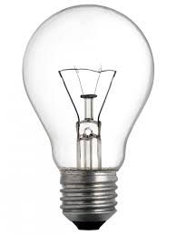

Top ten inventions
Compared to some of the gleaming, electronic inventions that fill our lives today, the plow doesn't seem very exciting. It's a simple cutting tool used to carve a furrow into the soil, churning it up to expose nutrients and prepare it for planting. Yet the plow is probably the one invention that made all others possible.
No one knows who invented the plow, or exactly when it came to be. It probably developed independently in a number of regions, and there is evidence of its use in prehistoric eras. Prior to the plow, humans were subsistence farmers or hunter/gatherers. Their lives were devoted solely to finding enough food to survive from one season to the next. Growing food added some stability to life, but doing it by hand was labor intensive and took a long time. The plow changed all that.
Plows made the work easier and faster. Improvements in the plow's design made farming so efficient that people could harvest far more food than they needed to survive. They could trade the surplus for goods or services. And if you could get food by trading, then you could devote your day-to-day existence to something other than growing food, such as producing the goods and services that were suddenly in demand.
The ability to trade and store materials drove the invention of written language, number systems, fortifications and militaries. As populations gathered to engage in these activities, cities grew. It's not a stretch to say that the plow is responsible for the creation of human civilization.
The wheel is another invention so ancient that we have no way of knowing who first developed it. The oldest wheel and axle mechanism we've found was near Ljubljana, Slovenia, and dates to roughly 3100 B.C.
The wheel made the transportation of goods much faster and more efficient, especially when affixed to horse-drawn chariots and carts. However, if it had been used only for transportation, the wheel wouldn't have been as much of a world-changer as it was. In fact, a lack of quality roads limited its usefulness in this regard for thousands of years.
A wheel can be used for a lot of things other than sticking them on a cart to carry grain, though. Tens of thousands of other inventions require wheels to function, from water wheels that power mills to gears and cogs that allowed even ancient cultures to create complex machines. Cranks and pulleys need wheels to work. A huge amount of modern technology still depends on the wheel, like centrifuges used in chemistry and medical research, electric motors and combustion engines, jet engines, power plants and countless others.

Like many of the inventions on this list, the man we believe invented the printing press (Johann Gutenberg in the 1430s) actually improved on pre-existing technologies and made them useful and efficient enough to become popular. The world already had paper and block printing -- the Chinese had them as early as the 11th century -- but the complexity of their language limited popularity. Marco Polo brought the idea to Europe in 1295.
Gutenberg combined the idea of block printing with a screw press (used for olive oil and wine production). He also developed metal printing blocks that were far more durable and easier to make than the hand-carved wooden letters in use previously. Finally, his advances in ink and paper production helped revolutionize the whole process of mass printing.
The printing press allowed enormous quantities of information to be recorded and spread throughout the world. Books had previously been items only the extremely rich could afford, but mass production brought the price down tremendously. The printing press is probably responsible for many other inventions, but in a more subtle way than the wheel. The diffusion of knowledge it created gave billions of humans the education they needed to create their own inventions in the centuries since.
Refrigerators cool things down by taking advantage of the way substances absorb and unload heat as their pressure points and phases of matter change (usually from gas to liquid and back). It's difficult to pinpoint a single inventor of the refrigerator, because the concept was widely known and gradually improved over the course of about 200 years. Some credit Oliver Evans' 1805 unproduced design of a vapor-compression unit, while others point to Carl von Linde's 1876 design as the actual precursor of the modern refrigerator in your kitchen. Dozens of inventors, including Albert Einstein, would refine or improve refrigerator designs over the decades.
In the early 20th century, harvested natural ice was still common, but large industries such as breweries were beginning to use ice-making machines. Harvested ice for industrial use was rare by World War I. However, it wasn't until the development of safer refrigerant chemicals in the 1920s that home refrigerators became the norm.
The ability to keep food cold for prolonged periods (and even during shipping, once refrigerated trucks were developed) drastically changed the food production industry and the eating habits of people around the world. Now, we have easy access to fresh meats and dairy products even in the hottest summer months, and we're no longer tied to the expense of harvesting and shipping natural ice -- which never could have kept pace with the world's growing population in any case.
Maybe it's cheating to lump the telegraph, telephone, radio and television into one "invention," but the development of communication technology has been a continuum of increased utility and flexibility since Samuel Morse invented the electric telegraph in 1836 (building on the prior work of others, of course). The telephone simply refined the idea by allowing actual voice communications to be sent over copper wires, instead of just beeps that spelled out the plain text in Morse code. These communication methods were point-to-point, and required an extensive infrastructure of wires to function.
Transmitting signals wirelessly using electromagnetic waves was a concept worked on by many inventors around the world, but Guglielmo Marconi and Nikola Tesla popularized it in the early 20th century. Eventually, sound could be transmitted wirelessly, while engineers gradually perfected the transmission of images. Radio and television were new landmarks in communications because they allowed a single broadcaster to send messages to thousands or even millions of recipients as long as they were equipped with receivers.
These developments in communications technology effectively shrank the world. In the span of about 120 years, we went from a world where it might take weeks to hear news from across the country to one where we can watch events occurring on the other side of the globe as they happen. The advent of mass communications put more information within our grasp and altered how we interact with each other.
Prior to the invention of the steam engine, most products were made by hand. Water wheels and draft animals provided the only "industrial" power available, which clearly had its limits. The Industrial Revolution, which is perhaps the greatest change over the shortest period of time in the history of civilization, was carried forward by the steam engine.
The concept of using steam to power machines had been around for thousands of years, but Thomas Newcomen's creation in 1712 was the first to harness that power for useful work (pumping water out of mines, for the most part). In 1769, James Watt modified a Newcomen engine by adding a separate condenser, which vastly increased the steam engine's power and made it a far more practical way to do work. He also developed a way for the engine to produce rotary motion, which may be just as important as the efficiency gains. Thus, Watt is often considered the inventor of the steam engine.
Newcomen's and Watt's engines actually used the vacuum of condensing steam to drive the pistons, not the pressure of steam expansion. This made the engines bulky. It was the high-pressure steam engine developed by Richard Trevithick and others that allowed for steam engines small enough to power a train. Not only did steam engines power factories that made the rapid production of goods possible, they powered the trains and steamships that carried those goods across the globe.
While the steam engine has been eclipsed by electric and internal combustion engines in the areas of transport and factory power, they're still incredibly important. Most power plants in the world actually generate electricity using steam turbines, whether the steam is heated by burning coal, natural gas or a nuclear reactor.
If the steam engine mobilized industry, the automobile mobilized people. While ideas for personal vehicles had been around for years, Karl Benz's 1885 Motorwagen, powered by an internal combustion engine of his own design, is widely considered the first automobile. Henry Ford's improvements in the production process -- and effective marketing -- brought the price and the desire for owning an auto into the reach of most Americans. Europe soon followed.
The automobile's effect on commerce, society and culture is hard to overestimate. Most of us can jump in our car and go wherever we want whenever we want, effectively expanding the size of any community to the distance we're willing to drive to shop or visit friends. Our cities are largely designed and built around automobile access, with paved roads and parking lots taking up huge amounts of space and a big chunk of our governments' budgets. The auto industry has fueled enormous economic growth worldwide, but it's also generated a lot of pollution.
If there's a common theme to this list, it's that no major invention came from a single stroke of genius from a single inventor. Every invention is built by incrementally improving earlier designs, and the person usually associated with an invention is the first person to make it commercially viable. Such is the case with the light bulb. We immediately think of Thomas Edison as the electric light bulb's inventor, but dozens of people were working on similar ideas in the 1870s, when Edison developed his incandescent bulb. Joseph Swan did similar work in Britain at the time, and eventually the two merged their ideas into a single company, Ediswan.
The bulb itself works by transmitting electricity through a wire with high resistance known as a filament. The waste energy created by the resistance is expelled as heat and light. The glass bulb encases the filament in a vacuum or in inert gas, preventing combustion.
You might think the light bulb changed the world by allowing people to work at night or in dark places (it did, to some extent), but we already had relatively cheap and efficient gas lamps and other light sources at the time. It was actually the infrastructure that was built to provide electricity to every home and business that changed the world. Today, our world is filled with powered devices than we can plug in pretty much anywhere. We have the light bulb to thank for it.

A computer is a machine that takes information in, is able to manipulate it in some way, and outputs new information. There is no single inventor of the modern computer, although the ideas of British mathematician Alan Turing are considered eminently influential in the field of computing. Mechanical computing devices were in existence in the 1800s (there were even rare devices that could be considered computers in ancient eras), but electronic computers were invented in the 20th century.
Computers are able to make complicated mathematical calculations at an incredible rate of speed. When they operate under the instructions of skilled programmers, computers can accomplish amazing feats. Some high-performance military aircraft wouldn't be able to fly without constant computerized adjustments to flight control surfaces. Computers performed the sequencing of the human genome, let us put spacecraft into orbit, control medical testing equipment, and create the complex visual imagery used in films and video games.
If we only examine these grandiose uses of computers, we overlook how much we rely on them from day to day. Computers let us store vast amounts of information and retrieve a given piece of it almost instantly. Many of the things we take for granted in the world wouldn't function without computers, from cars to power plants to phones.
The Internet, a network of computers covering the entire planet, allows people to access almost any information located anywhere in the world at any time. Its effects on business, communication, economy, entertainment and even politics are profound. The Internet may not have changed the world as much as the plow, but it's probably on par with the steam engine or automobile.
DARPA (Defense Advanced Research Projects Agency), the research and development arm of the U.S. military, created ARPANET in the late 1960s. This network of computer-to-computer connections was intended for military and academic research. Other computer networks began to cross the globe in the next few years, and by the late 1970s computer scientists had created a single protocol, TCP/IP, that would allow computers on any network to communicate with computers on other networks. This was, essentially, the birth of the Internet, but it took 10 or so years for various other networks in the world to adopt the new protocol, making the Internet truly global.
The Internet is such a powerful invention that we've probably only begun to see the effects it will have on the world. The ability to diffuse and recombine information with such efficiency could accelerate the rate at which further world-changing inventions are created. At the same time, some fear that our ability to communicate, work, play and do business via the Internet breaks down our ties to local communities and causes us to become socially isolated. Like any invention, the good or ill it accomplishes will come from how we choose to use it.